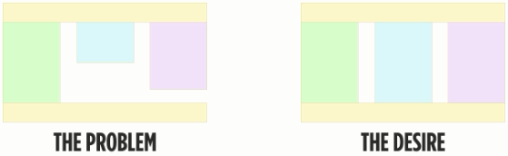

Линейные градиенты
Hello, linear-gradient!
В математике градиент - это функция, показывающая направление наискорейшего возрастания некоторой величины, значение которой меняется от одной точки пространства к другой
Если применить градиент к цвету, то получится плавный переход от одного цвета к другому. Например, вот так:
Градиенты описываются внутри CSS-свойства background-image. Простейший градиент можно описать таким образом:
background-image: linear-gradient(yellow, green);
Сам градиент создаётся функцией linear-gradient, в параметрах которой указываются направление градиента и набор цветов. Направление можно не указывать, тогда будет использовано значение по умолчанию - сверху вниз. Цветов может быть любое количество
Давайте потренируемся и создадим простеший двухцветный градиент для блока .content.
Направление градиента
Направление градиаента задаются с помощью ключевых слов: top, bottom, left, right
Направление градиента располагается пере списком цвемтов и включает в себя частицу to. Она добавлена в синтаксис для улучшения читабельности и наглядности.
background-image: linear-gradient(to right, yellow, green)
И сразу понятно, что это: "Жёлто-зелённый градиент слева направо"
Вот примеры разных направлений градиента с цветами yellow, green:
Градиенты по диагоналям
Градиенты можно напрвлять по диагонали, из угла в угол. Для этого нужно комбинировать top, bottom, left, right. Например, градиент, идущий из левого нижнего в правый верхний угол:
background-image: linear-gradient(to right top, yellow, green)
Вот примеры диагональных градиентов с цветами yellow, green:
Градиенты под углом
Направление линейного градиента можно задавать и в виде произвольного угла, например, 245. Направление в градусах задаётся с помощью единицы измерения deg. Можно задавать положтельные и отрицательные углы. Примеры:
background-image: linear-gradient(90deg, yellow, green);
background-image: linear-gradient(-135deg, yellow, green);
Углы градиента отсчитываются так:
0deg соответствует 12 часам, а отсчёт угла идёт по часовой стрелке. В случае, если угол задан отрицательным значением, например, -90deg, то он отсчитывается против часовой стрелки.
Диагонали против градусов
Иногда градиенты с направлениями, заданными с помощью градусов и диагоналей, выглядят одинаково

Однако их поведение отличается. Градиенты, заданные с помощью градусов, не зависят от формы контейнера, а диагональные градиенты зависят. Диагональные градиенты всегда остаются привязанными к своим углам.
Конечно, если контейнеры квадратные, то отличий не видно. Но что будет, если вытянуть их по высоте?
Равномерный многоцветный градиент
В линейный градиент можно включать больше двух цветов. Для этого цвета просто перечисляются через запятую. Например, если задать такой CSS:
linear-gradient(to right, red, yellow, green)
То получится равномерный гадиент с тремя цветами
Пропорции цветов и колорстопы
По умолчанию цвета в градиентах распределяются равномерно, в одинаковых пропорциях, но этим поедением можно управлять.
Делается это с помощью так называемых колорстопов, которые записываются сразу после значения цветов, например, red 0%, yellow 100%.
Колорстоп указывает положение цвета в градиенте, его можно задавать в процентах, пикселях и других единицах. Давайте рассмотрим несколько примеров, чтобы понять поведение колорстопов:
Колорстоп задаёт то место, где будет располагаться центральная (самая насыщенная) часть цвета
Резкие переходы цветов
Позиция цвета (или колорстоп) задаёт располоение центральной части цвета, ту точку, от которой начинается переход в другой цвет.
А что, будет если задать для соседних ветов одну и ту же позицию? В этом случае получится резкий переход цветов, так как они оба будут "вытекать" из одной точки в противоположных направлениях.
Легче продемонстрировать это поведение на примере:
Этот приём часто используется для создания интересных эффектов.
Псевдоколонки на градиентах
Одна из интересных задач вёрстки - как сверстать тянущиеся колонки одинаковой высоты без использования таблиц? Проблема эта связана с особенностями поведения блочной модели и проиллюстрирована на картинках ниже:
Для решения этой задачи существует несколько приёмов.
Давайте применим приём с использованием градиентов с резким переходоми, которые имитируют тянущиеся колонки. Фон с такими градиентами обычно размещают в контейнере колонок. Пропорции градиентов подбирают такими же, как и пропорции колонок, чтобы они тянулись одинаково.
Цветовые переходы в px
Цветовые переходы градиента можно также задавать в пикселях. Работают они по аналогии с процентными переходами. Отличие заключается в том, что процентные переходы зависят от размера элемента, а переходы в пикселях - нет.
Полупрозрачные градиенты
В CSS вы можете задать любой цвет с полупрозрачностью или даже задать прозрачный цвет. Это делается с помощью rgba-значений цветов, в которых помимо трёх цветов компонент присутствует прозрачность. Примеры:
- rgba(255, 255, 255, 1) - обычный белый цвет
- rgba(255, 255, 255, 0.5) - наполовину прозрачный белый
- rgba(255, 255, 255, 0)- полностью прозрачный цвет
Также прозрачный цвет можно задать с помощью ключевого слова transparent.
Прозрачные и полупрозрачные цвета используют и в градиентах для создания интересных эффектов.
Повторяющийся линейный градиент
Помимо обычных градиентв существвуют и повторяющиеся. Их синтаксис полностью полностью совпадает с синтаксисом обычных, только вместо linear-gradient пишется repeating-linear-gradient. Повторяющийся градиент хорош для создания полосатых фонов или фонов-орнаментов средствами CSS.
Есть несколько тонкостей, которые нужно знать про повторяющиеся градиенты:
- Размер фрагмента определяется по последнему колорстопу. Чтобы повторение было видно, последний колорстоп должен быть меньше, чем размер элемента с градиентом.
- Если первый и последний цвета градиента различаются, то будут видны резкие границы между повторяющимися фрагментами. Чтобы от них избавиться, нужно задавать одинаковый первый и последний цвет.
- Колорстопы в повторяющихся градиентах обычно задают в пикселях, но можно использовать и проценты
Кстати, вместо повторяющихся градиентов можно использовать обычно градиенты в сочетании со свойством background-size и background-repeat. Но повторяющиеся градиенты удобнее и требуют меньше кода.
В этом задании мы будем делать из обычных градиентов повторяющиеся. Обратите внимание на то, какого размера получаются фрагменты. Например, в первых двух блоках поместится ровно четыре фрагмента.
Строим сложный фон - часть 1
В этой серии заданий мы построим сложный узор с помощью градиентов. Делать это мы будем с помощью градиентов. Делать это мы будем с помощью техники множественных фоновых изображений.
В CSS можно задавать элементу сразу несколько фоновых кратинок, перечисляя их через запятую:
background-image:
url('img1.png'),
url('img2.png'),
url('img3.png');
Точно так же вместо картинок можно использовать градиенты:
background-image:
linear-gradient(...),
linear-gradient(...),
linear-gradient(...);
Мы будем использовать градиенты с прозрачными цветами и резкими переходами. Сначала построим повторяющийся фрагмент, а затем размножим его
Строим сложный фон - часть 2
На эом шаге нужно добавить ещё два градиента, чтобы получился фрагмент в виде чёрного ромба
Строим сложный фон - часть 3
CSS-градиенты - это особые фоновые изображения, и на них действуют все свойства для управления фонами: background-position, background-size, background-repeat.
В отличие от обычных изображений градиенты не имеют "собственного" размера, и их размер равен размеру элемента, в фоне которого они расположены. Конечно, такое поведение не подходит для построения оргаментов.
К счастью, мы можем задать размеры для градиента с помощью свойства background-size. Например, так:
background-size: 100px 200px
Такая запись задаст всем фоновым изображениям ширину 100px и высоту 200px
Задав размер для градиентов в фоне, мы получим фрагмент орнамента, повторением которого смоем управлять с помощью background-repeat.
На этом шаге мы увеличим контейнер, затем зададим размер для фоновых градиентов и отключим повторение, чтобы увидеть один кусочек орнамента
Строим сложный фон - Финал
На этом шаге мы завершим создание орнамента. Сначала мы растянем контейнер на всё окно, чтобы орнамент было лучше видно. Осталось внести небольшие изменения в базовый фрагмент и размножить его
Вернёмся к множественным фонам. Вы можете не тлько задавать несколько фоновых изображений, но и управлять размерами, расположением и повторением каждого из них по отдельности. Такая запись:
background-size: 100px 200px
Задаст всем фоновым изображениям один и тот же размер. А такая запись:
background-size:
100px 200px,
200px 300px,
300px 400px;
Задаст всем фоновым изображениям разные размеры.
Чтобы задавать разные значения свойств для множественных фонов, вам нужно просто перечислить эти значения через запятую в том же порядке, в каком вы записали изображения.
Кнопки - часть 1
Градиенты могут применяться и в более прикладном плане. Например, для создания краивых кнопок.
В этой серии заданий мы с помощью градиентов создадим красивые фоны для нескольких кнопок.
А начнём с простейшей кнопки.
Кнопки - часть 2
Построим ещё одну кнопку с фоновым линейным градиентом.
Это будет стильная, почти плоская тёмно-красная кнопка. В этот раз будем использовать и колорстопы.
Кнопки - часть 3
А сейчас создадим более сложную "блестящую и бликующую" всевдотрёхкамерную кнопка.
Для этого нам понадобится чуть больше цветов, заданных вручную колорстопов и один резкий переход